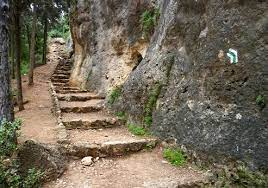

Beautiful places in Israel
"קום התהלך בארץ לאורכה ולרחבה"
בואו להכיר מקומות חדשים בארץ ישראל
in the Beit Shemesh area
- The hill of lupines is a natural beauty of a landscape of blossoms and fields,
the hill of lupines is located in the ancient Tel Soko,
at the end of winter you can watch the carpets of mountain lupine blossoms, bright in bright purple,
fill the hill and hence its name, this flower is on the global red list that is in danger of extinction,
so it should not be picked because it is a flower protected.Map and photos
-
The Forest of the Saints is a pastoral and dense forest planted on a slope on the side of the mountain,
the view and the descent down the forested slope and the story behind it,
makes it shrouded in mystery.
Map and photos

special places
Einot Biden-lower paradise
-
Einat Bidan or as it is known as the Lower Garden of Eden is a rare place,
not only because it is enclosed and a trip to it requires military coordination (which happens only once every few years)
but also by its very nature,
it is about flowing springs and an area so abundant that a water park fed by natural water was built instead,
the area Attributed to the Tirtzah property of the Zalfahad children and is considered one of the most fertile places in the country.